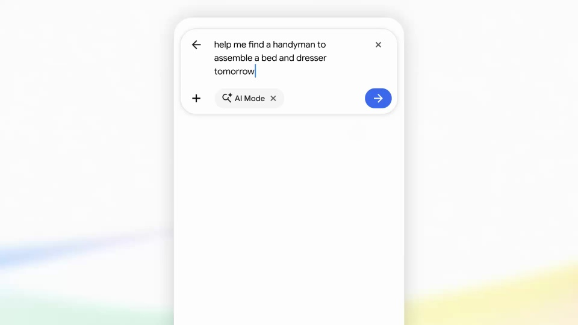
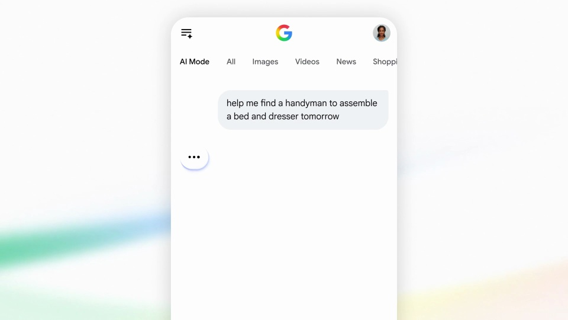
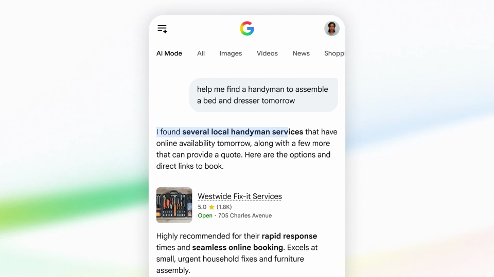
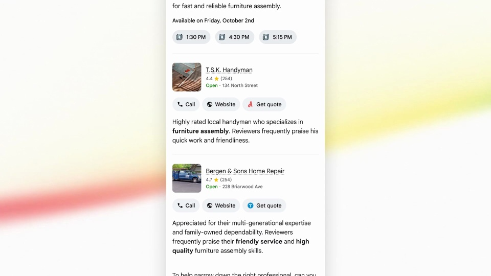
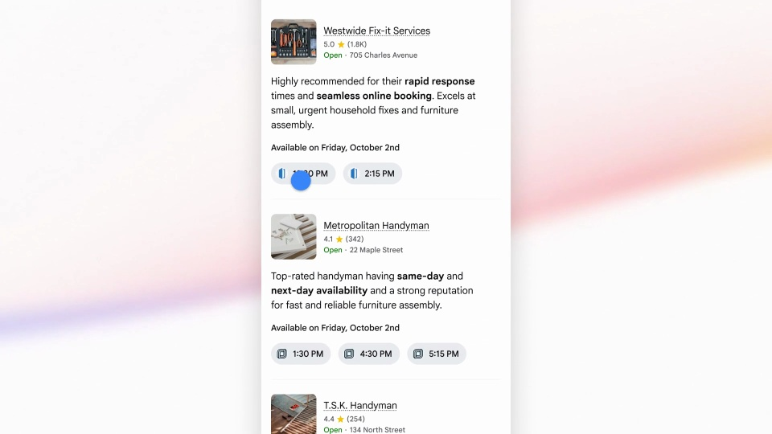

Google / V281
AI Mode Home Services
让一句带条件的请求变成一组可以联系的服务结果。手机始终居中，重点在内容推进与列表滚动。
构图与编排 可播放 · 可替换内容
整体编排规则示例
查看 HTML 源码
<!doctype html><html lang="zh-CN"><meta charset="utf-8"><meta name="viewport" content="width=device-width,initial-scale=1"><title>AI Mode Home Services · sequence</title><style>html,body{margin:0;width:100%;height:100%;overflow:hidden;background:#f9fbff}canvas{display:block;width:100%;height:100%;object-fit:contain}</style><body data-mode="sequence"><canvas width="1000" height="600"></canvas><script src="data.js"></script><script src="common.js"></script><script src="scene.js"></script><script src="bridge.js"></script></body></html>画面元素手机问题文本搜索状态服务商列表可预约时间联系按钮
MOTION LANGUAGE
动作与构图
局部动作 · 构图规则
01
把任务和限制写在同一问题里
白色手机放在淡彩背景中，输入框保持短而清楚。问题先交代要做什么，再给时间和地点，使用便于扫读的无衬线。
02
搜索之后再展开结果
用一个短处理中状态承接请求，随后出现服务概览。结果按服务商排列，名称、可用时间和联系入口保持固定列位。
03
滚动时保留列表身份
滚动时保留列表身份规则示例
查看 HTML 源码
<!doctype html><html lang="zh-CN"><meta charset="utf-8"><meta name="viewport" content="width=device-width,initial-scale=1"><title>AI Mode Home Services · sequence</title><style>html,body{margin:0;width:100%;height:100%;overflow:hidden;background:#f9fbff}canvas{display:block;width:100%;height:100%;object-fit:contain}</style><body data-mode="clip" data-start="10" data-end="24"><canvas width="1000" height="600"></canvas><script src="data.js"></script><script src="common.js"></script><script src="scene.js"></script><script src="bridge.js"></script></body></html>向下浏览时沿用同一条目顺序和高度，先看服务特色，再看时间。回到顶部时沿原列表返回，让观众理解空间位置。
04
换成课程、场地或工具查找
替换问题限制和结果内容，保持每个结果都能回应最初条件。名称较长时换行，时间和联系入口保持短行。
SEQUENCE
段落与节奏
点击段落，定位到上方编排示意。





画面参考 · 离散静帧
KEEP THE RELATIONSHIPS
制作其他主题
- 可换为课程或工具查找；保留约束→匹配→可执行结果。
- 替换价格和时间时维持列表内部一致。
制作约束
手机 / 问题文本 / 搜索状态 / 服务商列表 / 可预约时间 / 联系按钮
- 问题包含任务和时间限制，结果逐项回应这些限制。
- 滚动改变可见内容，列表顺序和对象身份保持不变。
- 以联系方式和可预约时间作为结果落点。